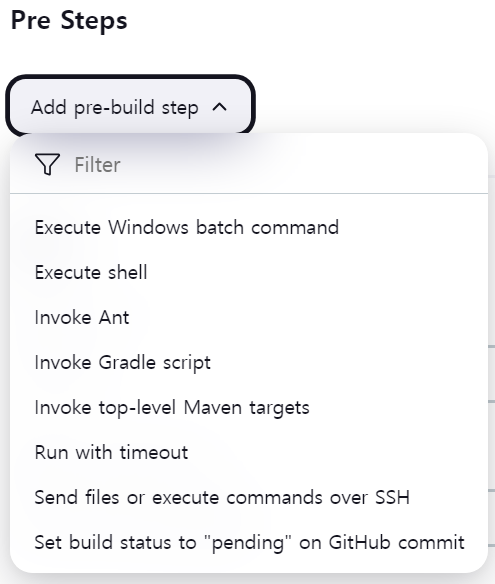
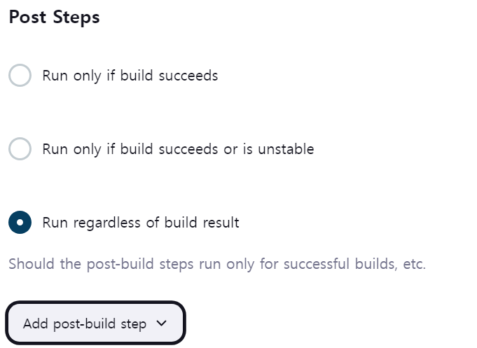
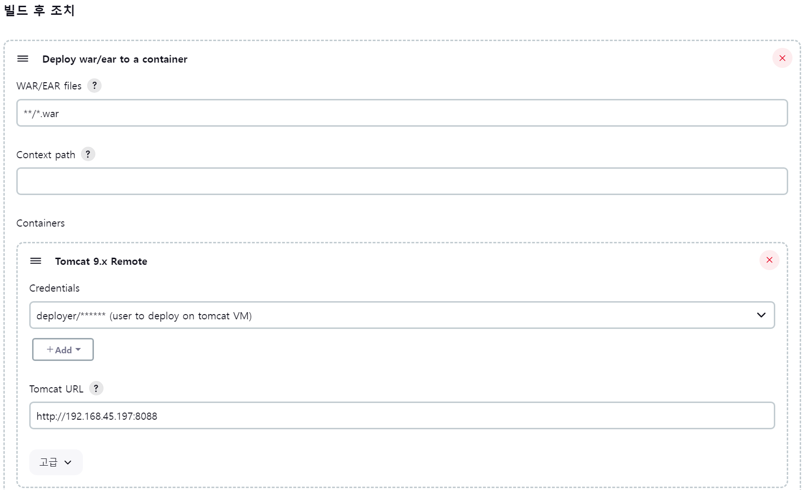
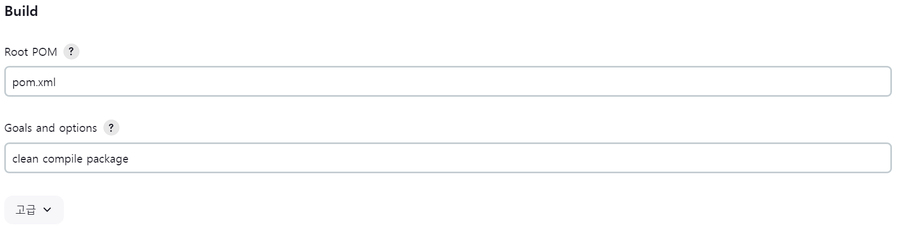

만약 깃허브 리포지토리가 private이고, ssh로 읽어오고 싶을 경우에는 젠킨스 서버에 ssh key를 생성하고 깃허브에 등록해야합니다.

Pre Steps
Pre Steps는 빌드 작업이 실행되기 전에 실행됩니다. 이 단계에서는 주로 빌드 작업을 실행하기 전에 필요한 설정 또는 전처리 작업을 수행합니다. 예를 들어, 소스 코드를 가져오기 전에 환경을 설정하거나, 실행 전에 특정 스크립트를 실행하는 등의 작업을 할 수 있습니다.

Post Steps
Post Steps는 빌드 작업이 실행된 후에 실행됩니다. 빌드 작업이 성공적으로 완료되었는지 여부와 관계없이 실행됩니다. 이 단계에서는 주로 빌드 작업 후에 추가적인 처리가 필요한 경우에 사용됩니다. 예를 들어, 빌드 결과를 로그에 기록하거나, 특정 작업을 완료한 후에 실행되는 스크립트를 실행하는 등의 작업을 할 수 있습니다

빌드 후 조치 (Post-build Actions)
빌드 후 조치는 빌드 작업이 완료된 후에 실행됩니다. 이 단계에서는 빌드 결과에 따라 다양한 작업을 수행할 수 있습니다. 예를 들어, 빌드 결과를 저장하거나, 이메일로 알림을 보내는 등의 작업을 할 수 있습니다.
빌드 결과를 톰캣 서버에 배포를 하려고 합니다.
톰캣 서버에 배포를 하려면 사용자가 배포 권한이 있어야합니다. credentials에 톰캣에 등록된 Deploy 권한이 있는 계정을 등록합니다.
빌드

--- war:3.2.2:war (default-war) @ web ---
[INFO] Packaging webapp
[INFO] Assembling webapp [web] in [/var/jenkins_home/workspace/My-2ndProject/target/hello-world]
[INFO] Processing war project
[INFO] Copying webapp resources [/var/jenkins_home/workspace/My-2ndProject/src/main/webapp]
[INFO] Webapp assembled in [34 msecs]
[INFO] Building war: /var/jenkins_home/workspace/My-2ndProject/target/hello-world.war
Git Repository에 fetch로 읽어온 Maven 프로젝트를 빌드하여 war 파일로 만드는 과정입니다. Assembling 컴파일된 파일을 패키징하는 과정을 말합니다.
해당 경로에 war파일을 생성한다는 로그입니다.
[INFO] Building war: /var/jenkins_home/workspace/My-2ndProject/target/hello-world.war
[INFO] ------------------------------------------------------------------------
[INFO] BUILD SUCCESS
[INFO] ------------------------------------------------------------------------
[INFO] Total time: 6.083 s
[INFO] Finished at: 2024-01-29T12:11:22Z
[INFO] ------------------------------------------------------------------------
Waiting for Jenkins to finish collecting data
[JENKINS] Archiving /var/jenkins_home/workspace/My-2ndProject/pom.xml to com.njonecompany.web/web/1.0/web-1.0.pom
[JENKINS] Archiving /var/jenkins_home/workspace/My-2ndProject/target/hello-world.war to com.njonecompany.web/web/1.0/web-1.0.war
channel stopped
Finished: SUCCESS
빌드된 결과를 젠킨스가 메타데이터로 활용하기 위해서 별도로 저장하는 과정을 확인할 수 있습니다.
지금은 빌드 후 조치에서 Deploy war/ear to a container를 사용하여 배포하기 때문에 tomcat manager 기능을 사용하지만, 지정된 폴더 (webapps)에 패키징된 war 파일을 복사한다면 사용하지 않아도 됩니다.
다만 배포 방식에 Jenkins의 Tomcat 연동 플러그인을 사용하여 배포하고자 할때에는 Tomcat manager가 필요합니다. Docker 이미지 중에 tomcat manager가 포함되어 있지 않다면, Manager 애플리케이션을 포함시켜 새로운 Docker 이미지로 생성할 수 있습니다.
톰캣 설정하기
# root@585ef880bf6d:/usr/local/tomcat/conf --server.xml
# pwd /usr/local/tomcat/conf
<!-- A "Connector" represents an endpoint by which requests are received
and responses are returned. Documentation at :
Java HTTP Connector: /docs/config/http.html
Java AJP Connector: /docs/config/ajp.html
APR (HTTP/AJP) Connector: /docs/apr.html
Define a non-SSL/TLS HTTP/1.1 Connector on port 8080
-->
<Connector port="8088" protocol="HTTP/1.1"
connectionTimeout="20000"
redirectPort="8443"
maxParameterCount="1000"
/>
server.xml을 수정하여 tomcat 8080 -> 8088 로 수정합니다
매니저 등록하기
#pwd /usr/local/tomcat/webapps.dist/manager/META-INF/context.xml
<?xml version="1.0" encoding="UTF-8"?>
<!--
Licensed to the Apache Software Foundation (ASF) under one or more
contributor license agreements. See the NOTICE file distributed with
this work for additional information regarding copyright ownership.
The ASF licenses this file to You under the Apache License, Version 2.0
(the "License"); you may not use this file except in compliance with
the License. You may obtain a copy of the License at
http://www.apache.org/licenses/LICENSE-2.0
Unless required by applicable law or agreed to in writing, software
distributed under the License is distributed on an "AS IS" BASIS,
WITHOUT WARRANTIES OR CONDITIONS OF ANY KIND, either express or implied.
See the License for the specific language governing permissions and
limitations under the License.
-->
<Context antiResourceLocking="false" privileged="true" >
<CookieProcessor className="org.apache.tomcat.util.http.Rfc6265CookieProcessor"
sameSiteCookies="strict" />
<Valve className="org.apache.catalina.valves.RemoteAddrValve"
allow="127\.\d+\.\d+\.\d+|::1|0:0:0:0:0:0:0:1" />
<Manager sessionAttributeValueClassNameFilter="java\.lang\.(?:Boolean|Integer|Long|Number|String)|org\.apache\.catalina\.filters\.CsrfPreventionFilter\$LruCache(?:\$1)?|java\.util\.(?:Linked)?HashMap"/>
</Context>